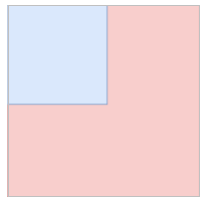
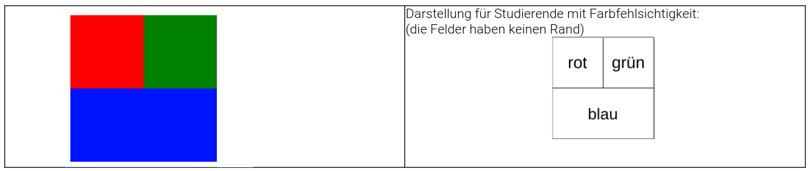
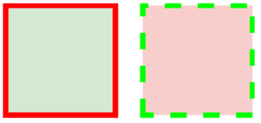
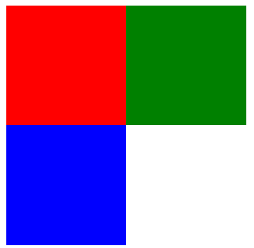

Übung 9: Grundlagen CSS
Aufgabe 1: Einfaches CSS-Styling
Budget: 15 Minuten
Gegeben ist der folgende Code-Ausschnitt, der noch in ein HTML-Dokument eingefügt werden muss. Wir verwenden dazu einfach Visual Studio Code mit seiner Vorschau-Funktion.
<h2>Erstes Kapitel</h2>
<p>Dies ist ein Absatz</p>
<h2>Zweites Kapitel</h2>
<p>Dies ist ein Absatz</p>- Wir färben im ersten Stylesheet die Überschrift im folgenden Code rot und hinterlegen den Absatz mit einem hellgrauen Hintergrund. Das Stylesheet wird in den Header eingefügt.
- Was passiert mit dem zweiten Kapitel und seiner Überschrift?
- Schreiben Sie rechts neben den Code eine Alternative auf Basis von Individualformaten (`id).
Aufgabe 2: Ein magisches Rechteck
Budget: 15 Minuten
Simsalabim! Wir zaubern ein blaues Rechteck auf die HTML-Seite
Unsere Schritte:
- Erstellen Sie eine HTML-Datei und fügen in den Body ein
divmit derid`box ein. - Im Head legen Sie ein Style-Tag an.
- Stylen Sie dort das
divmit der gegebenenidund geben Sie ihm –simsalabim- eine Höhe, Breite und natürlich eine zauberhafte Hintergrundfarbe!
Aufgabe 3: Mehr Magie: Bei Berührung wechselt die Farbe
Budget: 15 Minuten
Ziel: Ein grünes Rechteck mit 100x100 Pixeln, welches bei Berührung mit der Maus rot wird.
Unsere Schritte:
- Wir legen wieder eine HTML-Datei mit einem
divan und geben demdiveine id. - Im Style-Tag im Head stylen wir die
idblau und geben die Abmessungen vor. - Wir legen die
idnochmals an und fügen ein:hoverhinzu. In diesem Style vergeben wir die Hintergrundfarbe rot.
Aufgabe 4: Eine Box in der Box
Budget: 15 Minuten
Erzeugen Sie mittels CSS und HTML-Code die abgebildete Darstellung. Die äußere Box soll dabei 200 Pixel breit sein.

Unsere Schritte:
- Wir legen das HTML an. Hierzu nehmen wir ein
divund geben diesem eineid. - In das
div-Tag setzen wir ein weiteresdivmit einer anderenid. - Wir stylen das äußere und innere
div. Beachten Sie dabei, dass die Breite und Höhe des innerendivbei 50% des äußerendivliegt.
Aufgabe 5: Bunt, bunt sind die CSS-Boxen
Budget: 15 Minuten
Erzeugen Sie mittels CSS aus dem gegebenen HTML-Code die abgebildete Darstellung.
Die äußere Box soll dabei 200 Pixel breit sein.

<!DOCTYPE html>
<html lang="de">
<head>
<meta charset="UTF-8">
<title>Bunt, bunt sind die CSS-Boxen</title>
</head>
<body>
<div class="box">
<div id="box1"></div>
<div id="box2"></div>
</div>
</body>
</html>Aufgabe 6: CSS mit Abstand betrachtet
Budget: 15 Minuten
Erzeugen Sie mittels CSS aus dem gegebenen HTML-Code die abgebildete Darstellung.
Die Boxen sollen dabei 200 Pixel breit sein. Es soll für die Lösung keine Positionierung verwendet werden. Sie benötigen hier die Eigenschaften margin und border.

<!DOCTYPE html>
<html lang="de">
<head>
<meta charset="UTF-8">
<title>Bunt, bunt sind die CSS-Boxen</title>
</head>
<body>
<div id="box1"></div>
<div id="box2"></div>
</body>
</html>Aufgabe 7: Zeigen Sie Position!
Budget: 15 Minuten
Erzeugen Sie mittels CSS aus dem gegebenen HTML-Code die abgebildeten Darstellungen jeweils separat. Verwenden Sie hierzu Positionierung. Welche Art der Positionierung ist hier geeignet: fixed, relative und/oderabsolute. (Tipp: es sind zwei der drei).
Erste Darstellung:

Zweite Darstellung:

Homework
Homework sind immer die Aufgaben bis zur kommenden Woche. Sie können natürlich schon beginnen, wenn Sie mit den anderen Aufgaben bereits fertig sind.
Aufgabe 1: Boxen
Erstelle Sie ein Stylesheet, dass aus dem unten angegebenen HTML die folgende Darstellung erzeugt.

<!DOCTYPE html>
<html lang="de">
<head>
<meta charset="UTF-8">
<title>Title</title>
</head>
<body>
<div id="box1"></div>
<div id="box2"></div>
<div id="box3"></div>
</body>
</html>